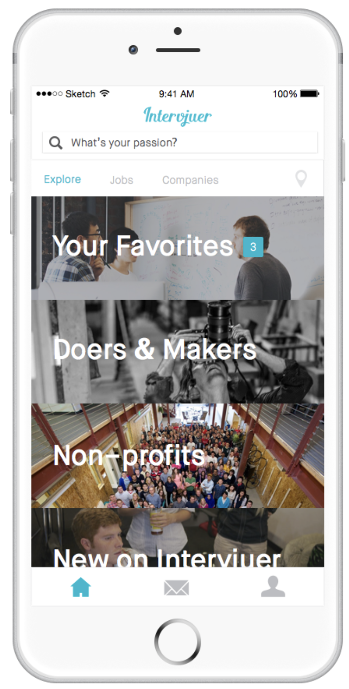
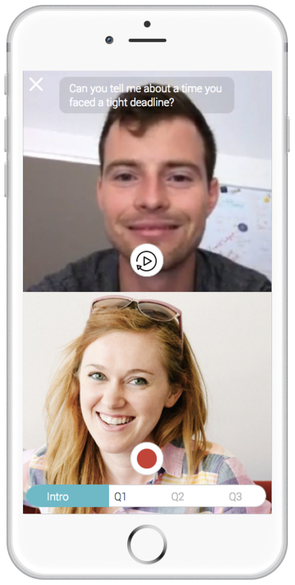

Intervjuer
Intervjuer is a video-based interview and job matching platform designed to streamline recruitment and job discovery. The system enables users to record video responses, complete structured interview flows, and communicate in real time.



Video Recording
A central feature of the platform is video-based responses. Users can record answers directly in the app, allowing employers to evaluate candidates more effectively than traditional text-based applications.
Forms & Interview Flow
The application includes structured forms and guided interview steps, ensuring a smooth and intuitive experience. Users progress through clearly defined stages, improving usability and consistency across interviews.
Real-Time Chat
A real-time chat system allows direct communication between users and recruiters. This was implemented using Firebase, enabling instant updates and seamless interaction.
Job Matching & Platform Vision
Beyond interviews, the platform was designed as a job discovery tool where users can connect with opportunities in a more dynamic way. By combining video, structured data, and communication, the system creates a richer hiring experience.
Web Integration
The platform was extended with a React-based web application sharing the same backend infrastructure. This allowed users to access similar functionality in the browser, including video recording and data synchronization across devices.
Tech Stack
- Swift (iOS)
- Firebase Authentication
- Firebase Realtime Database
- Video recording & media handling
- React (web application)